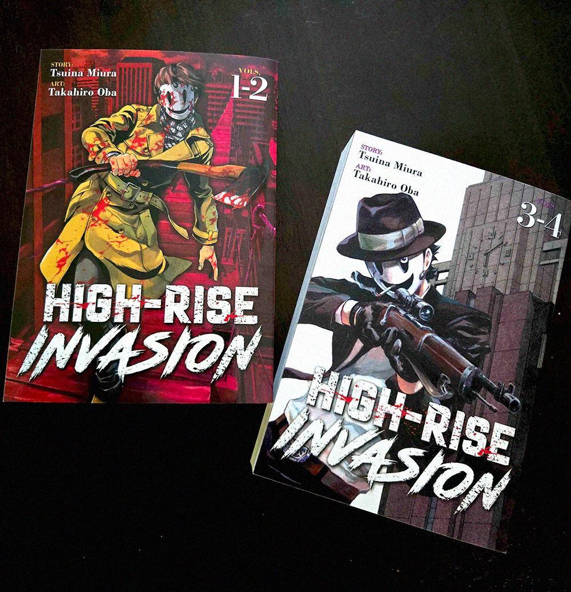

Alright. So. Where do I even fucking start?
Finn, that’s the guy who is practically stalking me, that’s his name. He sent in recon. Her name is Vega, sweet chic with the brightest platinum blond hair. Wicken sense of fashion too, almost thought she looked better than I did.
Anyways, she came in and ambushed me. She prompted a chance for us to hang out, and I told her to exact same thing that I told Finn. But, instead of sulking and walking away, she got aggressive with me.
This chic basically told me that I didn’t get a choice, and I was going with her, whether I liked it or not. So, what did I do with this absolutely insane behavior…?
i actually hung out with her (•_•)
I know, I know! Why would I do that?
Well, exactly what I had said before. Deep down, this is what I was looking for. For someone to actually care about me. And here she was, being served on a silver platter. And I thought ‘what the hell? What is the worst thing that could happen?’ and went for it.
I did accuse her of trying to steal my organs, which, my half joke didn’t seem to land very well with her.
After hanging out with her, I actually felt… happy? Like, not crazy happy, but above my baseline. Which is a net positive for me. So I’m gonna hang out with her again. But Finn? No, I can’t let that guy in. I’d ruin him. At least Vega seems like someone who would get it. But Finn? He’s too sweet for me. He seems like a good guy.
Anyways, I don’t know how to end this. Journaling is harder than I thought it’d be.
Cedar